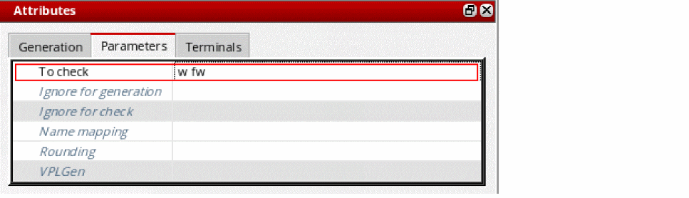

Checking a Parameter on a Cellview
To check a specified cellview parameter:
- In the Configure Physical Hierarchy window, click the Cells tab.
-
Click the row containing the cell with the parameters you want to check.
The row is highlighted and the options in the Attributes pane are enabled. -
In the Parameters tab – To check field, type the name of any parameter to be checked by the Check Against Source command.
 -
From the menu bar, choose File – Save to save the physical configuration view.
The settings are saved for all the instances of the cell in question. The specified parameters are checked the next time you run the Check Against Source command or update the layout view.
Related Topics
Checking a Parameter on an Instance or Occurrence
Return to top